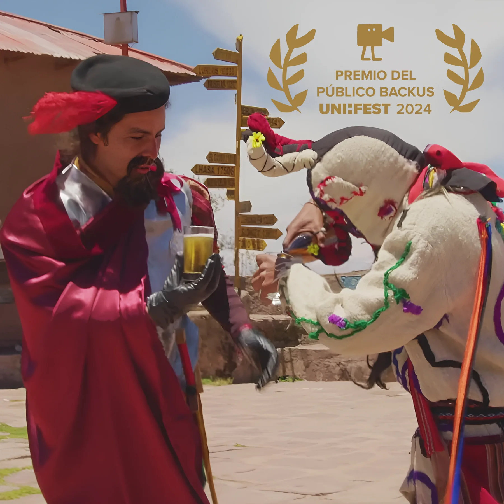
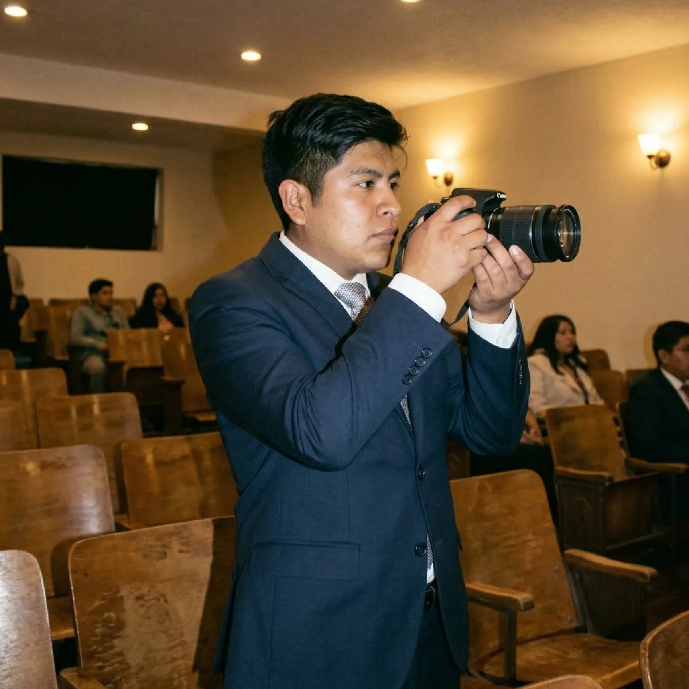
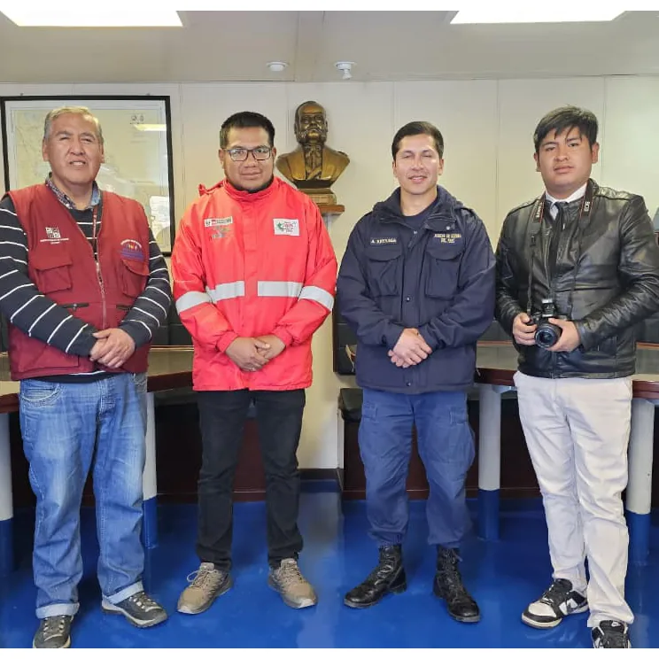

Producción Audiovisual & Media Lab
Showreel oficial y registro visual de producciones cinematográficas galardonadas, campañas institucionales y proyectos de comunicación audiovisual dirigidos por Marco Antonio Ramos Pacompia.
Catálogo de Producciones
Haz clic en cada producción para inspeccionar la ficha técnica y la evidencia fotográfica en alta definición.

Cortometraje "El Informe"
Montaje narrativo y postproducción cinematográfica premiada a nivel nacional entre más de 10 universidades.

Campañas Postgrado UNA Puno
Spots promocionales y contenido multimedia para los programas de maestría y doctorado de la universidad.

ODAJUP Poder Judicial
Piezas audiovisuales orientadas al acceso a la justicia y difusión de los derechos comunitarios en la región.

Divulgación & Paper Científico
Estudio empírico sobre herramientas disruptivas de IA aplicadas a los flujos comunicacionales y creativos.

Diploma al Mérito de Editor
Reconocimiento académico a la excelencia en montaje narrativo, edición de sonido y finalización de video.

Galardón Nacional Backus
Premio cinematográfico nacional obtenido por el cortometraje "El Informe" con votación mayoritaria del público.